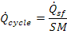
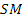
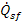
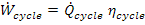
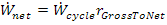
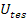
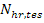

The Plant page provides information and sizing calculations for the power cycle and thermal energy storage systems. This information is primarily used to estimate total plant cost.
Note that information on this page is not used to estimate annual power output and only provides basic costing information.
SolarPILOT is an optical design and characterization tool and does not perform annual productivity simulations. You can specify the field size on the Layout Setup page using the Solar Field Design Power and other settings.
[MWt] You can specify this value on the Layout Setup page. It is provided here for reference.
[-] The ratio of thermal power delivered by the solar field to thermal power consumed by the power cycle at reference conditions. This ratio determines the relative sizing of the solar field and the power cycle for purposes of introducing thermal storage.
[-] Cycle thermodynamic efficiency (electric power output divided by thermal power input) at reference conditions. This value is used to estimate the gross turbine power output.
[MWt] Calculated value indicating the thermal input required by the cycle at reference conditions.

where:
 |
Solar Multiple |
 |
Solar field design power [MWt] |
[MWe] Calculated power cycle gross electrical output at design. Equal to cycle thermal power input times cycle conversion efficiency.

[-] The estimated ratio of net output to the grid divided by gross output from the cycle. This provides an estimate of the parasitic losses associated with plant operation on average.
[MWe] Calculated net power output estimate for reference conditions. This value is used to calculate Estimated Cost per Capacity on the Costs page.

[hr] Number of hours of full-load cycle operation that can be delivered by the thermal energy storage system when no energy is available from the solar field. The number of hours of thermal storage is related to the thermal capacity of the system as follows:

where:
 |
Thermal capacity of the TES system [MWh] |
 |
Hours of full-load thermal storage [hr] |